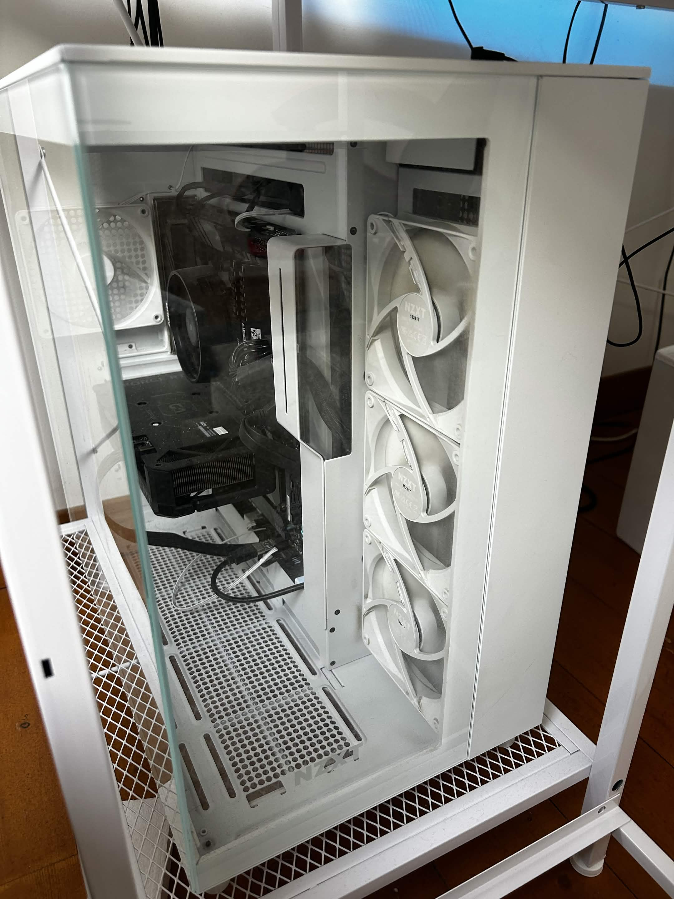

Portfolio JASMIN Mattéo
- Présentation
Je m'appelle Mattéo Jasmin, j'ai 20 ans et je rentre en première année de BTS SIO. J'ai obtenu un baccalauréat général avec les spécialités Sciences Numériques et Informatique (NSI) et Anglais Monde Contemporain. Après mon bac, j'ai effectué une première année de licence de droit, qui ne m'a finalement pas convenu. En attendant une nouvelle rentrée scolaire, j'ai travaillé avant de reprendre mes études à l'IPSSI. Aujourd'hui, je suis motivé à développer mes compétences en informatique et je recherche un stage du 26 avril au 25 juin 2027 afin de mettre en pratique mes connaissances, découvrir le monde professionnel et poursuivre mon évolution dans ce domaine.

Mes compétences
1. Mes bases actuelles
Développement web
- Bases du code en HTML
- Bases du code en CSS
- Notions de code en Python
- Notions d'algorithmique
Bases Informatiques
- Utilisation de Windows
- Montage de PC
- Installations de logiciels
- Notions générales du fonctionnement d'un ordinateur
2. Mes futures compétences (acquises au cours de ma formation)
Nouveaux Languages de programmation
- Apprentissage du langage C
- Apprentissage du langage JavaScript
Nouvelles compétences variées
- Approfondissement des bases déjà acquises
- Travail en équipe
- Gestion de projets informatiques
Mes projets
Projet de fin d'année (2024)
La consigne était de réaliser un projet en groupe de quatre. Nous avons donc décidé de créer un jeu intégré à une page web, avec un système permettant de conserver les meilleurs scores dans une base de données. Personnellement, j'étais chargé, avec un camarade, du développement du jeu. Un autre membre du groupe s'occupait de la page web, tandis que le dernier était chargé de la base de données. Nous avons obtenu la note de 20/20 à l'issue de la présentation du projet. En raison de problèmes liés à l'hébergement, le projet est actuellement disponible sur itch.io, mais uniquement dans sa partie jeu, sans la page web ni la base de données. Voici le lien :
Projegg huntConstruction et paramétrage de mon PC personnel (2025)
Je souhaitais me construire un ordinateur suffisamment performant et polyvalent afin de pouvoir réaliser différents types de tâches, aussi bien pour mes études que pour mes projets personnels. J'ai donc commencé par sélectionner les différents composants en fonction de mes besoins et de leur compatibilité. Une fois les composants choisis, j'ai réalisé moi-même le montage complet du PC, en installant notamment le processeur, la mémoire vive, la carte graphique, le stockage et l'alimentation. J'ai ensuite effectué les différentes étapes de configuration afin de rendre l'ordinateur fonctionnel et adapté à mon utilisation. Ce projet m'a permis de mieux comprendre le fonctionnement et l'assemblage d'un ordinateur, mais également de développer mon autonomie dans le choix du matériel, le montage et la configuration d'un poste informatique.
- AMD Ryzen 5 5600X 6-Core Processor
- 32 Go de RAM (2x16)
- NVIDIA GeForce RTX 4060 (8Go)
- 2,5 To de stockage (1 To SSD , 1,5 To HDD)
- ASUS TUF gaming B550-PLUS WIFI II
- alimentation 750 W, entièrement modulaire, certification Gold
- NZXT H9 flow

Contact
- Téléphone : 06 20 32 95 74
- Adresse e-mail : matteojasmin06@gmail.com
- Profil GitHub